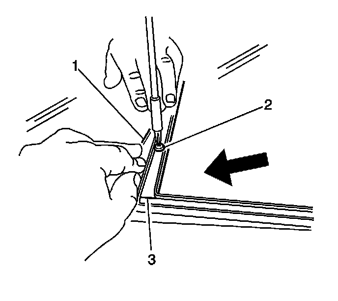
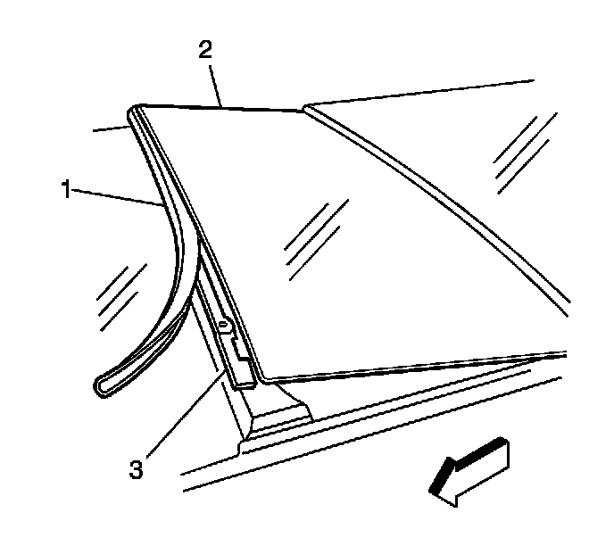
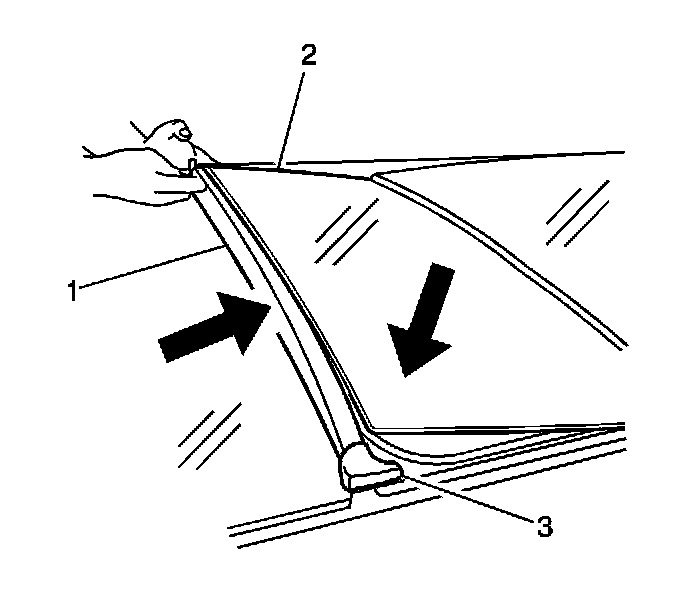

Sunroof Window Replacement (Center)
Sunroof Window Replacement (Center)
Removal Procedure

1. Pull back the forward sealing strip edge (1) of the center window panel.
2. Remove the 5 attaching screws (2).

3. Tip the window panel (2) upward. Slide the window panel toward the front of the vehicle.
4. Remove the window panel.
Installation Procedure

1. Tilt the window (2). Slide the window rearward into position.
2. Position the forward weatherstrip (1) under the forward edge of the center window flange (3).
3. Firmly set the center window panel (2) into position.
4. Ensure that the forward and rearward window seams are centered.
Notice: Refer to Fastener Notice (Fastener Notice) .
5. Install the 5 panel attaching screws.
Tighten the screws to 5 N.m (44 lb in).